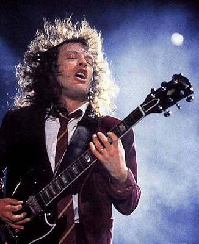

Menu
Menu Lineup
LineupAngus Young
Life and career
Angus Young, the youngest of eight children of William and Margaret Young, was born in Glasgow, Scotland and moved with his parents to Sydney, Australia in 1963 with his older brothers Malcolm, George, who also became musicians, and their older sister Margaret. Oldest brother Alex, also a musician, stayed in the UK. Angus first started playing on banjos but re-strung them with six strings. Angus first started playing guitar on a cheap acoustic model purchased second-hand by his mother. Angus's first Gibson SG was bought second-hand in 1970 from a music shop just down the street from his home:
" I got out and got a Gibson SG that I played until it got wood rot because so much sweat and water got into it. The whole neck warped. I bought it second-hand, it was about a '67. It had a real thin neck, really slim, like a Custom neck. It was dark brown."
Formation of AC/DC
As a teenager, Young played in a band called 'Kantuckee'. He was 18 when he and his 20 year old brother Malcolm formed AC/DC in 1973 with Angus on lead guitar, Malcolm on rhythm guitar, Colin Burgess on drums, Larry Van Kriedt on bass guitar and Dave Evans on vocals. Can I Sit Next To You Girl, their first single, was later re-recorded with Bon Scott as their vocalist. They got the name AC/DC after seeing the letters "AC/DC" on the back of a sewing machine owned by their sister, Margaret.
Angus tried a number of stage costumes, such as Spider-Man, Zorro, a gorilla, and a parody of Superman, named Super-Ang, before settling on his signature schoolboy look. To match this image the press and public were told that Young was born in 1959, not 1955. The original uniform was from his secondary school, Ashfield Boys High School in Sydney. By 1973, Angus had long left school. His sister Margaret suggested he wear the uniform after Malcolm asked each band member to come up with their own gimmick.
Recent events
Although Young prefers to keep his private life out of the media, it is known that he lives in Sydney, Australia and also has a home in Aalten, Netherlands where his wife grew up. Young married his Dutch wife, Ellen, in 1980 shortly before Bon Scott died at the age of 33 after a night of heavy drinking in London.
On 24 August 2006, Young received Kerrang! magazine's Legend Award from the editor, Paul Brannigan. Brannigan called AC/DC "one of the most important and influential rock bands in history".